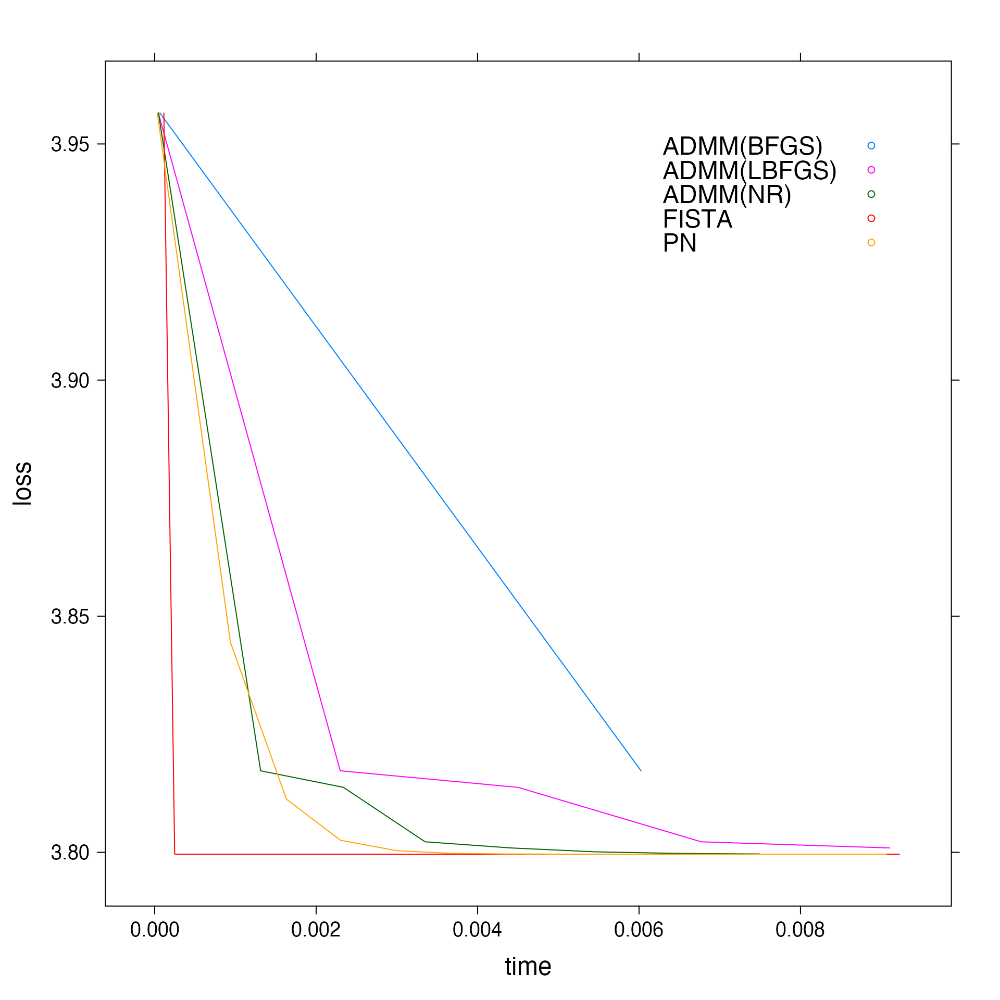
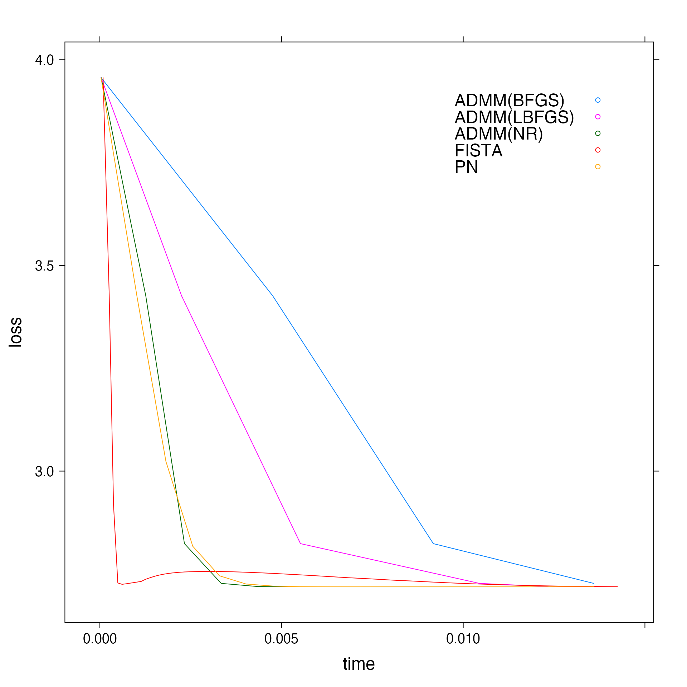

Gaussian Likelihood Benchmarks
Akarsh Goyal
2020-08-26
gaussian.RmdThis tutorial documents the performance of the solvers for Gaussian Likelihood function.
Well Conditioned Problems
n > p
set.seed(34) d <- randomProblem(1000, 10, response="gaussian", density = 1, rho=0) # Obtaining fits for each solver and plotting loss vs time graph f <- getBenchmarks(d$x, d$y, family="gaussian", path_length = 100) #> [1] "Time taken by FISTA : 13.616099904" #> [1] "Time taken by ADMM(NR) : 0.846032063" #> [1] "Time taken by ADMM(BFGS) : 3.816789954" #> [1] "Time taken by ADMM(L-BFGS) : 2.37319759" #> [1] "Time taken by PN : 1.71011457"
# Plot for middle alpha in the path if (f$path_length > 1) { data <- getBenchmarks(d$x, d$y, family="gaussian", alpha=f$alpha[(f$path_length %/% 2)+1]) plt_middle_well1 <- xyplot(loss ~ time, group = solver, data = data, auto.key = list(corner = c(0.9, 0.9)), type = "l") update(plt_middle_well1, par.settings = list(fontsize = list(text = 18))) } #> [1] "Time taken by FISTA : 0.196146457" #> [1] "Time taken by ADMM(NR) : 0.011929434" #> [1] "Time taken by ADMM(BFGS) : 0.056812083" #> [1] "Time taken by ADMM(L-BFGS) : 0.02355924" #> [1] "Time taken by PN : 0.02232939"

# Plot for 10th alpha in the path if (f$path_length >= 10) { data <- getBenchmarks(d$x, d$y, family="gaussian", alpha=f$alpha[10]) plt_10_well1 <- xyplot(loss ~ time, group = solver, data = data, auto.key = list(corner = c(0.9, 0.9)), type = "l") update(plt_10_well1, par.settings = list(fontsize = list(text = 18))) } #> [1] "Time taken by FISTA : 0.014165516" #> [1] "Time taken by ADMM(NR) : 0.00925238" #> [1] "Time taken by ADMM(BFGS) : 0.044046823" #> [1] "Time taken by ADMM(L-BFGS) : 0.02014929" #> [1] "Time taken by PN : 0.01971692"

# Plot for last alpha in the path data <- getBenchmarks(d$x, d$y, family="gaussian", alpha=f$alpha[f$path_length]) #> [1] "Time taken by FISTA : 0.46785185" #> [1] "Time taken by ADMM(NR) : 0.014267137" #> [1] "Time taken by ADMM(BFGS) : 0.050430906" #> [1] "Time taken by ADMM(L-BFGS) : 0.041315323" #> [1] "Time taken by PN : 0.024075696" plt_last_well1 <- xyplot(loss ~ time, group = solver, data = data, auto.key = list(corner = c(0.9, 0.9)), type = "l") update(plt_last_well1, par.settings = list(fontsize = list(text = 18)))

n < p
set.seed(4) d <- randomProblem(20, 50, response="gaussian", density = 1, rho=0) # Obtaining fits for each solver and plotting loss vs time graph f <- getBenchmarks(d$x, d$y, family="gaussian", path_length = 100) #> [1] "Time taken by FISTA : 0.357573487" #> [1] "Time taken by ADMM(NR) : 2.741155916" #> [1] "Time taken by ADMM(BFGS) : 99.200344639" #> [1] "Time taken by ADMM(L-BFGS) : 2.429800712" #> [1] "Time taken by PN : 6.401546973"
# Plot for middle alpha in the path if (f$path_length > 1) { data <- getBenchmarks(d$x, d$y, family="gaussian", alpha=f$alpha[(f$path_length %/% 2)+1]) plt_middle_well2 <- xyplot(loss ~ time, group = solver, data = data, auto.key = list(corner = c(0.9, 0.9)), type = "l") update(plt_middle_well2, par.settings = list(fontsize = list(text = 18))) } #> [1] "Time taken by FISTA : 0.009397626" #> [1] "Time taken by ADMM(NR) : 0.0176239" #> [1] "Time taken by ADMM(BFGS) : 0.54651282" #> [1] "Time taken by ADMM(L-BFGS) : 0.014211047" #> [1] "Time taken by PN : 0.033653844"
# Plot for 10th alpha in the path if (f$path_length >= 10) { data <- getBenchmarks(d$x, d$y, family="gaussian", alpha=f$alpha[10]) plt_10_well2 <- xyplot(loss ~ time, group = solver, data = data, auto.key = list(corner = c(0.9, 0.9)), type = "l") update(plt_10_well2, par.settings = list(fontsize = list(text = 18))) } #> [1] "Time taken by FISTA : 0.0016228" #> [1] "Time taken by ADMM(NR) : 0.028357637" #> [1] "Time taken by ADMM(BFGS) : 0.793473714" #> [1] "Time taken by ADMM(L-BFGS) : 0.01820068" #> [1] "Time taken by PN : 0.03069422"

# Plot for last alpha in the path data <- getBenchmarks(d$x, d$y, family="gaussian", alpha=f$alpha[f$path_length]) #> [1] "Time taken by FISTA : 0.009331987" #> [1] "Time taken by ADMM(NR) : 0.092419533" #> [1] "Time taken by ADMM(BFGS) : 3.4295784" #> [1] "Time taken by ADMM(L-BFGS) : 0.08206691" #> [1] "Time taken by PN : 0.20543222" plt_last_well2 <- xyplot(loss ~ time, group = solver, data = data, auto.key = list(corner = c(0.9, 0.9)), type = "l") update(plt_last_well2, par.settings = list(fontsize = list(text = 18)))
Badly Conditioned Problems
n > p
set.seed(34) d <- randomProblem(1000, 10, response="gaussian", density = 1, rho=0.95) # Obtaining fits for each solver and plotting loss vs time graph f <- getBenchmarks(d$x, d$y, family="gaussian", path_length = 100) #> [1] "Time taken by FISTA : 35.936591345" #> [1] "Time taken by ADMM(NR) : 7.566180609" #> [1] "Time taken by ADMM(BFGS) : 20.697794558" #> [1] "Time taken by ADMM(L-BFGS) : 27.722008984" #> [1] "Time taken by PN : 1.301922449"
# Plot for middle alpha in the path if (f$path_length > 1) { data <- getBenchmarks(d$x, d$y, family="gaussian", alpha=f$alpha[(f$path_length %/% 2)+1]) plt_middle_bad1 <- xyplot(loss ~ time, group = solver, data = data, auto.key = list(corner = c(0.9, 0.9)), type = "l") update(plt_middle_bad1, par.settings = list(fontsize = list(text = 18))) } #> [1] "Time taken by FISTA : 0.275236653" #> [1] "Time taken by ADMM(NR) : 0.114285764" #> [1] "Time taken by ADMM(BFGS) : 0.299172984" #> [1] "Time taken by ADMM(L-BFGS) : 0.369326736" #> [1] "Time taken by PN : 0.004908137"
# Plot for 10th alpha in the path if (f$path_length >= 10) { data <- getBenchmarks(d$x, d$y, family="gaussian", alpha=f$alpha[10]) plt_10_bad1 <- xyplot(loss ~ time, group = solver, data = data, auto.key = list(corner = c(0.9, 0.9)), type = "l") update(plt_10_bad1, par.settings = list(fontsize = list(text = 18))) } #> [1] "Time taken by FISTA : 0.009984157" #> [1] "Time taken by ADMM(NR) : 0.015368857" #> [1] "Time taken by ADMM(BFGS) : 0.040249383" #> [1] "Time taken by ADMM(L-BFGS) : 0.057074796" #> [1] "Time taken by PN : 0.027008967"
# Plot for last alpha in the path data <- getBenchmarks(d$x, d$y, family="gaussian", alpha=f$alpha[f$path_length]) #> [1] "Time taken by FISTA : 2.792300923" #> [1] "Time taken by ADMM(NR) : 0.174634666" #> [1] "Time taken by ADMM(BFGS) : 0.445524544" #> [1] "Time taken by ADMM(L-BFGS) : 0.605278263" #> [1] "Time taken by PN : 0.00703543" plt_last_bad1 <- xyplot(loss ~ time, group = solver, data = data, auto.key = list(corner = c(0.9, 0.9)), type = "l") update(plt_last_bad1, par.settings = list(fontsize = list(text = 18)))
n < p
set.seed(4) d <- randomProblem(20, 50, response="gaussian", density = 1, rho=0.95) # Obtaining fits for each solver and plotting loss vs time graph f <- getBenchmarks(d$x, d$y, family="gaussian", path_length = 100) #> [1] "Time taken by FISTA : 0.236199927" #> [1] "Time taken by ADMM(NR) : 2.655675646" #> [1] "Time taken by ADMM(BFGS) : 31.929407717" #> [1] "Time taken by ADMM(L-BFGS) : 2.899638966" #> [1] "Time taken by PN : 4.068284836"
# Plot for middle alpha in the path if (f$path_length > 1) { data <- getBenchmarks(d$x, d$y, family="gaussian", alpha=f$alpha[(f$path_length %/% 2)+1]) plt_middle_bad2 <- xyplot(loss ~ time, group = solver, data = data, auto.key = list(corner = c(0.9, 0.9)), type = "l") update(plt_middle_bad2, par.settings = list(fontsize = list(text = 18))) } #> [1] "Time taken by FISTA : 0.002249017" #> [1] "Time taken by ADMM(NR) : 0.01106293" #> [1] "Time taken by ADMM(BFGS) : 0.11153619" #> [1] "Time taken by ADMM(L-BFGS) : 0.011856223" #> [1] "Time taken by PN : 0.010837917"
# Plot for 10th alpha in the path if (f$path_length >= 10) { data <- getBenchmarks(d$x, d$y, family="gaussian", alpha=f$alpha[10]) plt_10_bad2 <- xyplot(loss ~ time, group = solver, data = data, auto.key = list(corner = c(0.9, 0.9)), type = "l") update(plt_10_bad2, par.settings = list(fontsize = list(text = 18))) } #> [1] "Time taken by FISTA : 0.00080399" #> [1] "Time taken by ADMM(NR) : 0.037265604" #> [1] "Time taken by ADMM(BFGS) : 0.377600007" #> [1] "Time taken by ADMM(L-BFGS) : 0.042175386" #> [1] "Time taken by PN : 0.015211253"
# Plot for last alpha in the path data <- getBenchmarks(d$x, d$y, family="gaussian", alpha=f$alpha[f$path_length]) #> [1] "Time taken by FISTA : 0.016550583" #> [1] "Time taken by ADMM(NR) : 0.102077" #> [1] "Time taken by ADMM(BFGS) : 1.158653634" #> [1] "Time taken by ADMM(L-BFGS) : 0.105270423" #> [1] "Time taken by PN : 0.321289683" plt_last_bad2 <- xyplot(loss ~ time, group = solver, data = data, auto.key = list(corner = c(0.9, 0.9)), type = "l") update(plt_last_bad2, par.settings = list(fontsize = list(text = 18)))